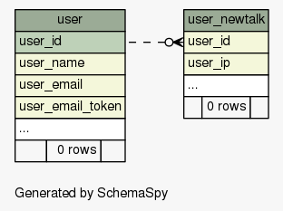
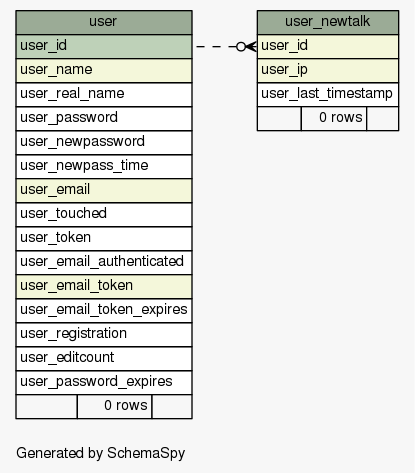

| SchemaSpy Analysis of mediawiki.mediawiki - All Relationships | Generated by SchemaSpy |
| Generated on Mon May 04 23:37 UTC 2015 |
| ||||||||
|
No 'real' Foreign Key relationships were detected in the schema. Displayed relationships are implied by a column's name/type/size matching another table's primary key.
| |||||||||
|   |